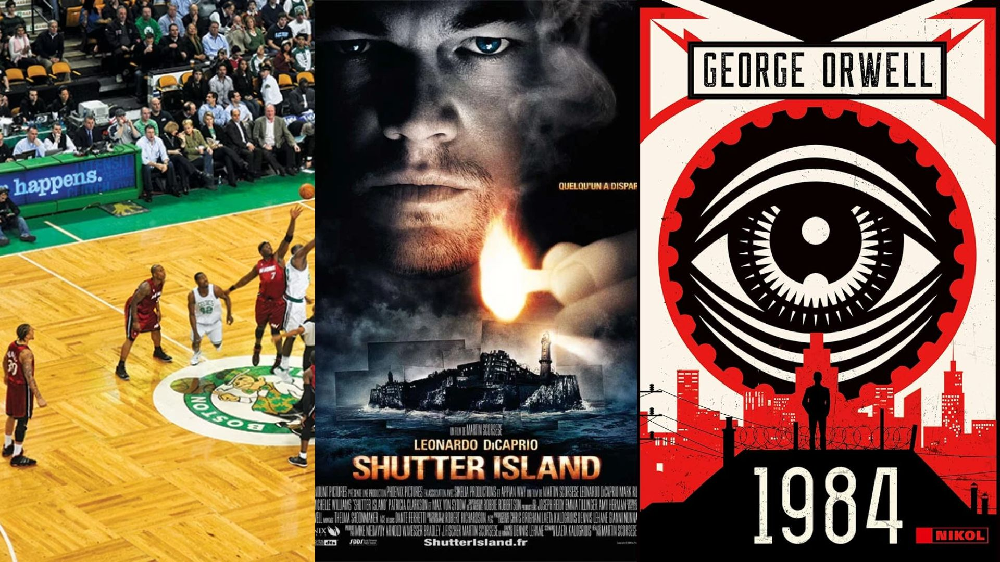
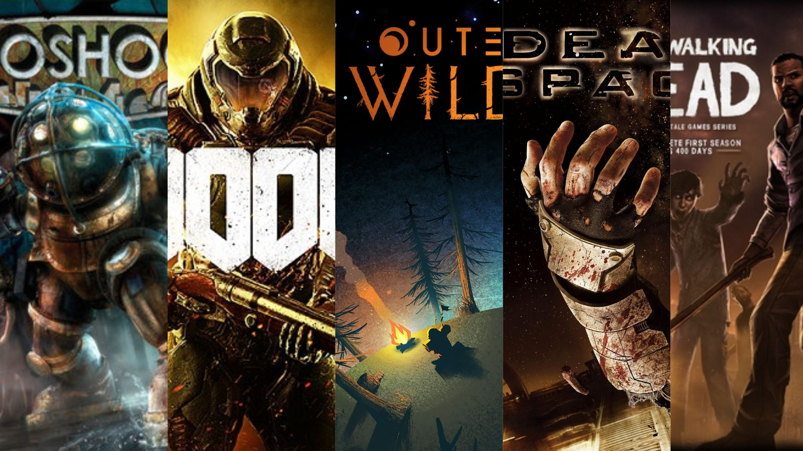

About Me

Introduction
Hello! I'm Virgile, a Game Design student for the past three years, during which I've acquired solid skills such as the essential principles of Game Design, Level design, as well as programming on Unity and Unreal Engine.
I'm convinced that the key to a game's quality lies in an original, stimulating and, above all, engaging experience. Every aspect, be it the dynamics, the story or the visuals, must contribute to conveying a message, an idea or a vision that players will be able to fully appreciate.
Through my various projects, I have taken on a variety of roles, including Game Designer, Programmer and Level Designer, helping to create memorable experiences.
In this portfolio, you will discover a selection of my projects highlighting my ability to conceive entertaining and captivating games, to elaborate coherent designs , and to collaborate effectively within a creative team.
Feel free to explore my work and contact me to discuss projects or opportunities. I'm always on the lookout for new experiences in game design.
My Passions
First of all, I have an unconditional love of basketball and the world of sport in general. From an early age, I've been fascinated by the intensity of the game, the solidarity on the court and the adrenalin that accompanies every tournament/game. Whether it's playing on the court or watching NBA games on TV, basketball is always at the center of my preoccupations.
Apart from sport, I also regularly immerse myself in the captivating world of film. I enjoy a wide range of genres (thriller, science fiction, historical drama...), but it's above all films that evoke emotion and reflection that capture my attention. Well-crafted stories, outstanding acting performances and impressive visual achievements are what motivate me to continually explore the world of cinema. - Favorite films: Shutter Island, Forrest Gump, The Wolf of Wall Street, Schindler's List, Mystic River, The Green Mile, No Country for Old Men...
Literature is also an important part of my life, especially dystopias. Fascinated by dark and intriguing tales that explore the flaws of society and alternative futures, I read books that take me to imaginary worlds where nothing is ever simple or predictable. Each new dystopia is an opportunity for me to plunge into a profound reflection on humanity and the future of society. - Favorite books: 1984, Animal Farm, The Man in the High Castle, Fahrenheit 451, The Road...
Video Games
As a game designer, exploring different video game genres is more than just a passion; it's an obsession. For me, each game represents a unique experience , an immersion in a creative and captivating world. I love diving headlong into epic adventures, discovering fantastic worlds and innovative game mechanics.
What fascinates me most is the infinite diversity that the gaming industry has to offer. From frenetic action games to complex strategy games, from immersive RPGs to nostalgic platformers, I'm eager to discover everything this medium has to offer. I don't shy away from older games, on the contrary. I appreciate timeless classics as much as the latest releases, because every title, regardless of its release date, has something unique to offer.
My passion for video games goes beyond mere entertainment. As a Game Designer, every gaming experience allows me to analyze and appreciate game mechanics, level design and artistic choices. Each game I play enriches my understanding of the medium and feeds my creativity in my own game design work.
In short, for me, video games are not just a hobby, but an infinite source of inspiration and wonder. My thirst for exploration and discovery in this universe is insatiable, and I'm always ready to dive into new adventures, whether they're recent or decades old.
French Resume

English Resume